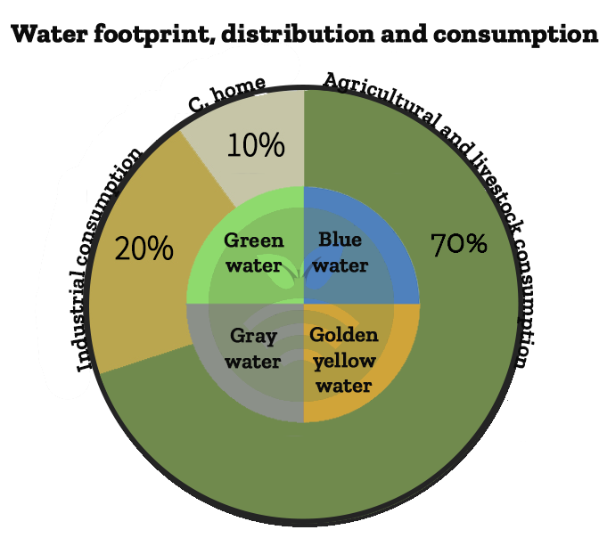
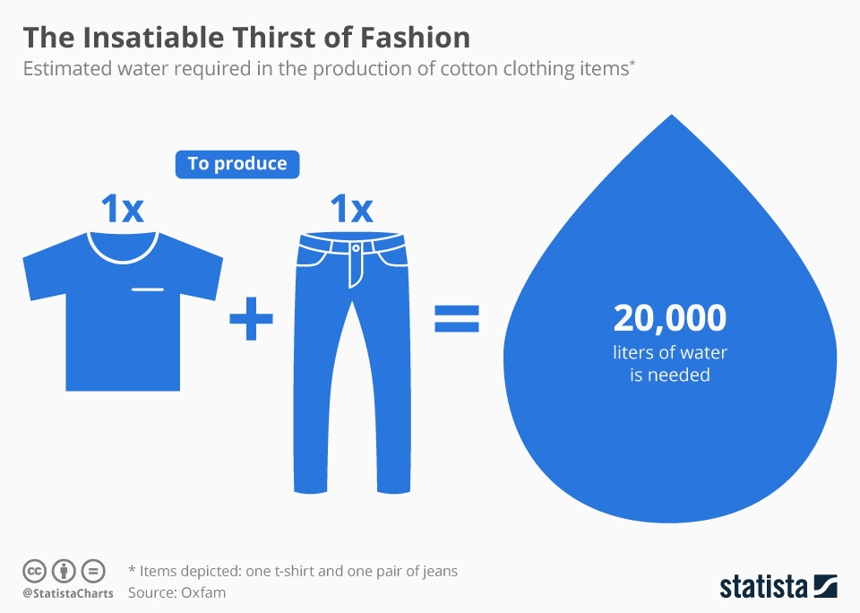
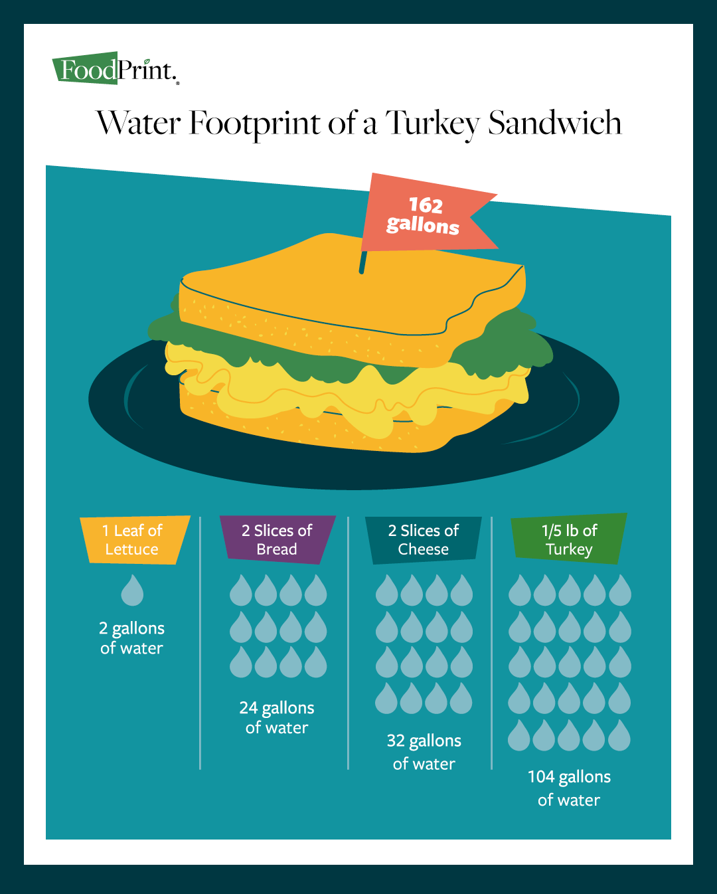
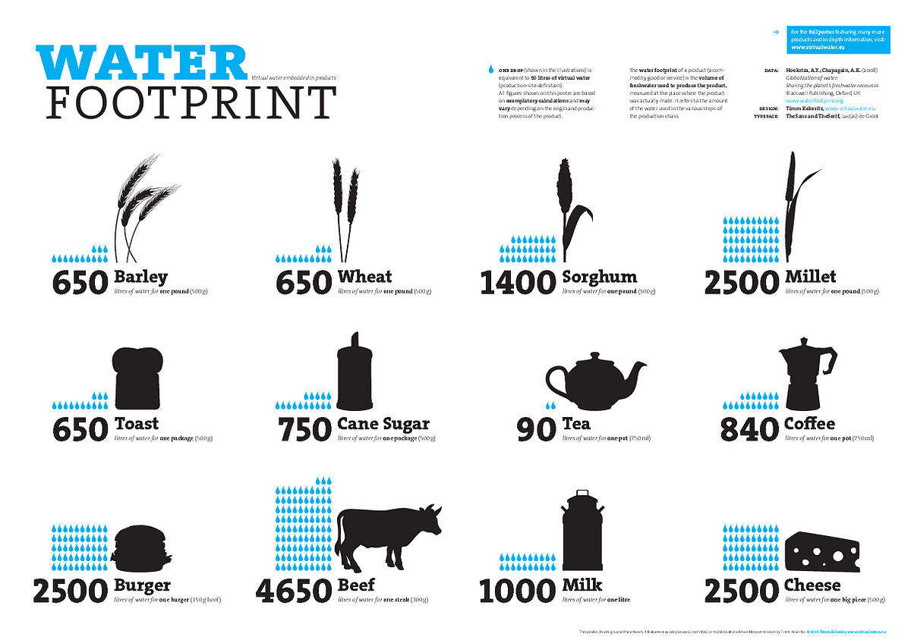

Water FootPrint👣
[ Created by Straw_Hats👒 Team ]





The concept of a water footprint measures the total volume of freshwater used to produce goods and services. It helps individuals and organizations understand the impact of their consumption on global water resources. By tracking the water footprint of various products, we can make more informed decisions and adopt practices that reduce water usage, contributing to the conservation of this vital resource. Learn more about how different foods impact water consumption and how you can make sustainable choices.